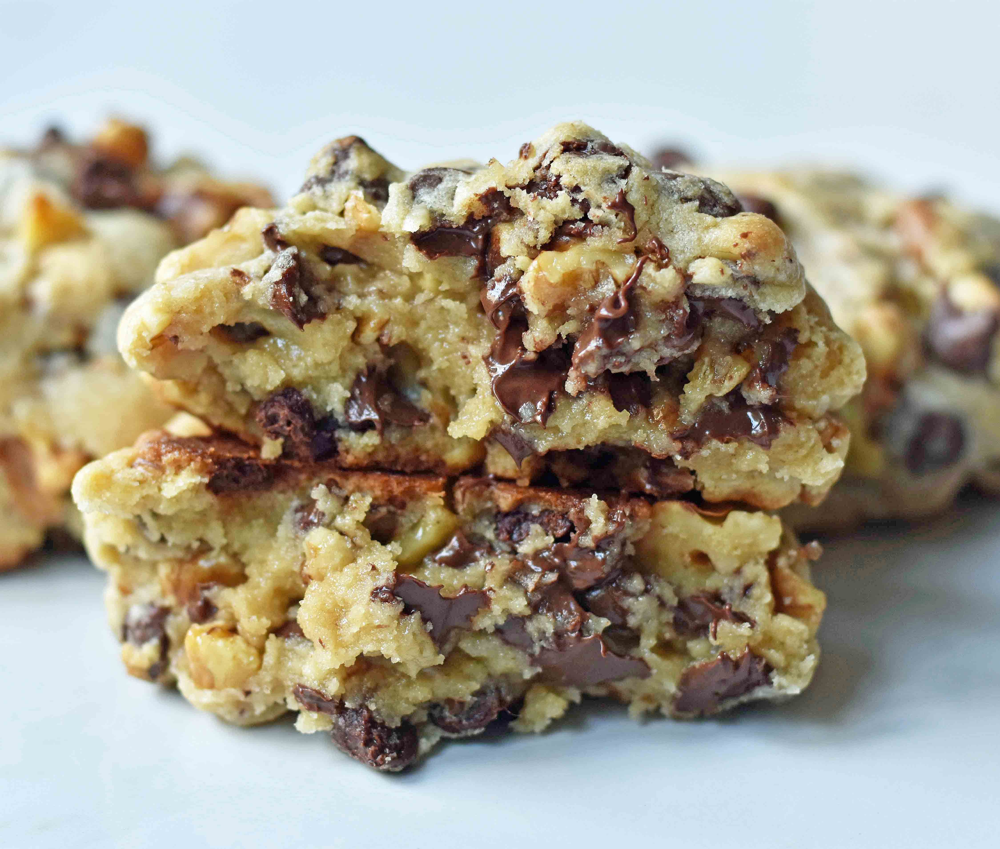

The Odin Project: Home
Levain Chocolate-Chip Cookies

Description
Juicy large chocolate chip cookies modeled after the famous Levain Bakery in NYC
Ingredients
- 1 cup Cold Butter cut into small cubes
- 1 cup Brown Sugar
- ½ cup Sugar
- 2 Eggs
- 1 ½ cups Cake Flour*
- 1 ½ cups Flour
- 1 teaspoon Cornstarch
- ¾ teaspoon Baking Soda
- ¾ teaspoon Salt
- 2 cups Chocolate Chips
Instructions
- Preheat oven to 410 degrees.
- In a large mixing bowl, cream together cold cubed butter, brown sugar, and sugar for 4 minutes or until creamy.
- Add eggs, one at a time, mixing well after each one.
- Stir in flours, cornstarch, baking soda, and salt. Mix until just combined to avoid overmixing. Stir in chocolate chips and walnuts.
- Separate dough into large balls and place on lightly colored cookie sheet. They are bigger than you think! You will fit 4 cookies on one large cookie sheet. The dough makes 8 extra large cookies.
Other Recipes